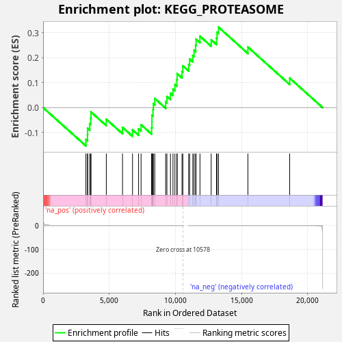
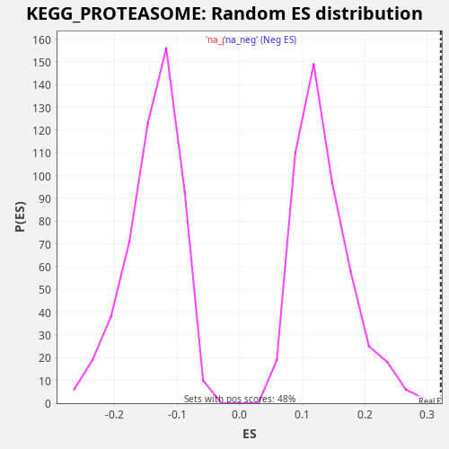

| Dataset | CCLE |
| Phenotype | NoPhenotypeAvailable |
| Upregulated in class | na_pos |
| GeneSet | KEGG_PROTEASOME |
| Enrichment Score (ES) | 0.32154223 |
| Normalized Enrichment Score (NES) | 2.3848007 |
| Nominal p-value | 0.0 |
| FDR q-value | 0.005827642 |
| FWER p-Value | 0.023 |

| SYMBOL | RANK IN GENE LIST | RANK METRIC SCORE | RUNNING ES | CORE ENRICHMENT | |
|---|---|---|---|---|---|
| 1 | PSMB5 | 3235 | 0.000 | -0.1278 | Yes |
| 2 | PSMD8 | 3356 | 0.000 | -0.1078 | Yes |
| 3 | PSMC6 | 3365 | 0.000 | -0.0826 | Yes |
| 4 | PSMA5 | 3523 | 0.000 | -0.0644 | Yes |
| 5 | PSMC4 | 3601 | 0.000 | -0.0424 | Yes |
| 6 | PSMB6 | 3620 | 0.000 | -0.0176 | Yes |
| 7 | PSMD2 | 4778 | 0.000 | -0.0468 | Yes |
| 8 | POMP | 6003 | 0.000 | -0.0792 | Yes |
| 9 | PSMA1 | 6759 | 0.000 | -0.0894 | Yes |
| 10 | PSMD6 | 7216 | 0.000 | -0.0854 | Yes |
| 11 | PSMD11 | 7405 | 0.000 | -0.0687 | Yes |
| 12 | PSMB9 | 8204 | 0.000 | -0.0809 | Yes |
| 13 | PSMC1 | 8226 | 0.000 | -0.0562 | Yes |
| 14 | PSMD12 | 8229 | 0.000 | -0.0307 | Yes |
| 15 | PSMD14 | 8307 | 0.000 | -0.0087 | Yes |
| 16 | PSMA2 | 8333 | 0.000 | 0.0158 | Yes |
| 17 | PSME4 | 8440 | 0.000 | 0.0364 | Yes |
| 18 | PSMB8 | 9267 | 0.000 | 0.0228 | Yes |
| 19 | PSME2 | 9359 | 0.000 | 0.0442 | Yes |
| 20 | PSMD7 | 9627 | 0.000 | 0.0571 | Yes |
| 21 | PSMB1 | 9818 | 0.000 | 0.0738 | Yes |
| 22 | PSMA4 | 9965 | 0.000 | 0.0925 | Yes |
| 23 | PSMD3 | 10111 | 0.000 | 0.1113 | Yes |
| 24 | PSMC3 | 10134 | 0.000 | 0.1358 | Yes |
| 25 | PSMA6 | 10500 | 0.000 | 0.1442 | Yes |
| 26 | PSMB7 | 10563 | 0.000 | 0.1669 | Yes |
| 27 | PSMA3 | 11004 | -0.000 | 0.1717 | Yes |
| 28 | PSME3 | 11075 | -0.000 | 0.1940 | Yes |
| 29 | PSMD1 | 11315 | -0.000 | 0.2083 | Yes |
| 30 | PSMC5 | 11411 | -0.000 | 0.2294 | Yes |
| 31 | PSMB2 | 11529 | -0.000 | 0.2495 | Yes |
| 32 | PSMC2 | 11561 | -0.000 | 0.2737 | Yes |
| 33 | PSMB4 | 11857 | -0.000 | 0.2853 | Yes |
| 34 | PSMD13 | 12706 | -0.000 | 0.2708 | Yes |
| 35 | PSMF1 | 13109 | -0.000 | 0.2773 | Yes |
| 36 | PSMB10 | 13147 | -0.000 | 0.3012 | Yes |
| 37 | PSMA7 | 13260 | -0.000 | 0.3215 | Yes |
| 38 | PSMD4 | 15481 | -0.000 | 0.2419 | No |
| 39 | PSME1 | 18638 | -0.000 | 0.1179 | No |

{kind=link}
{kind=link}